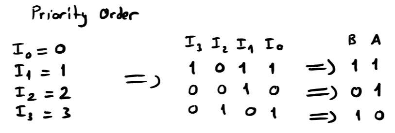
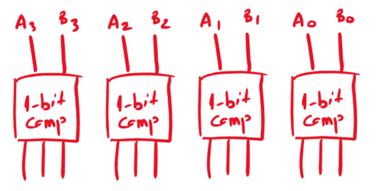

1Nerede kaldık?
Hoca dersi bir listeyle açmış. Çizginin üstündekileri gördük, altındakiler bu dersin konusu.
| Yapı taşı | Ne yapar? | Nerede gördük? |
|---|---|---|
| Half Adder | 2 bit toplar | 3. ders |
| Full Adder | 3 bit (elde dahil) toplar | 3. ders |
| Multiplexer | Çok girişten birini seçer | 6. ders |
| Demultiplexer | Tek girişi çok çıkıştan birine yollar | 6. ders |
| Encoder | Hangi hattın aktif olduğunu ikili koda çevirir | Bu ders |
| Decoder | İkili kodu tek bir aktif hatta çevirir | Bu ders |
| Comparator | İki sayıyı karşılaştırır | Bu ders |
2Encoder (kodlayıcı)
Birçok giriş hattından hangisinin aktif olduğunu bulup bu bilgiyi kısa bir ikili kod olarak veren devre.
Hocanın örneği: 20 tuşlu bir tuş takımı. Her tuş ayrı bir kablo. Bir tuşa basınca o kablo 1 olur. Ama hafızaya 20 kablo bağlamak yerine "hangi tuşa basıldı" bilgisini bir sayı olarak saklamak isteriz. 3 tuşuna basılınca hafızaya 00000011 (8 bit) yazılır. Bu çeviriyi encoder yapar. Hoca bloğa "Encoder, Decimal-to-Binary" yazmış. Çıkışın üstüne de "8-bit" yazmış: hafızanın bir kelimesi 8 bit, encoder'ın ürettiği 5 bitlik kodun başına sıfırlar eklenip 8 bit olarak saklanıyor.
Basit encoder'ın formülleri
Aynı anda yalnızca bir girişin 1 olduğunu varsayan basit 4×2 encoder: çıkışın yüksek biti A, girişin numarası 2 ya da 3 ise 1; düşük biti B, numara 1 ya da 3 ise 1. Yani A = I₂ + I₃, B = I₁ + I₃. Sadece OR kapıları. 8×3 encoder için aynı mantıkla: A₂ = I₄ + I₅ + I₆ + I₇, A₁ = I₂ + I₃ + I₆ + I₇, A₀ = I₁ + I₃ + I₅ + I₇ (numarasının o biti 1 olan girişler).
İki giriş birden 1 olursa bu formüller saçma sonuç verir (I₁ ve I₂ birlikte 1 → 11 çıkar, ama 3 numaralı giriş aktif değil). Bu sorunu bir sonraki bölümdeki öncelikli encoder çözüyor.
Kaç çıkış gerekir?
Hoca iki blok çizmiş: 20 giriş → 5 çıkış ve 2⁸ giriş → 8 çıkış. Kural: "If there are N outputs, there must be 2ᴺ inputs". Yani N bitlik bir kod en fazla 2ᴺ farklı girişi ayırt edebilir.
- 20 tuş için: 2⁴ = 16 yetmez, 2⁵ = 32 yeter → 5 çıkış. (32 kodun 12'si kullanılmaz.)
- 256 = 2⁸ giriş için tam 8 çıkış.
- Genel olarak: giriş sayısı M ise çıkış sayısı N, 2ᴺ ≥ M olan en küçük sayı.
Hocanın kod tablosu: 0–9 tuşları kendi değerlerine (hoca "BCD" demiş), A–F tuşları 10–15'e, sonra ! = 16 → 10000, . = 17 → 10001, : = 18 → 10010, ; = 19 → 10011.
Hoca tuş kodları için "BCD" yazmış. 0–9 için BCD ile düz ikili aynı olduğundan bu doğru. Ama A–F ve sembol tuşları BCD'de yazılamaz (BCD sadece 0–9'dur). Onların kodu düz ikili. Doğru terim: encoder her tuşa bir ikili kod atıyor.
3Öncelikli encoder (priority encoder)
Basit bir encoder aynı anda tek girişin aktif olduğunu varsayar. Ya iki tuşa birden basılırsa? Öncelikli encoder kuralı koyar: numarası en büyük olan aktif giriş kazanır.
4×2 Decimal-to-binary Priority Encoder
Hocanın örneği, PDF s.1–24 giriş (I₀–I₃), 2 çıkış (A, B). Çıkış, aktif girişlerin en büyük numarasının ikili kodu. A yüksek bit, B düşük bit. Öncelik sırası: I₃ en yüksek, I₀ en düşük.
Hocanın örnekleri:
- I₃I₂I₁I₀ = 1011: aktifler I₃, I₁, I₀. En büyüğü I₃ → 3 → AB = 11.
- 0010: sadece I₁ → 1 → AB = 01.
- 0101: aktifler I₂, I₀. En büyüğü I₂ → 2 → AB = 10.

Hocanın bu örnekteki sütun başlığı "B A" diye yazılmış ama değerler A'dan başlayarak okunuyor (doğruluk tablosundaki "A B" sırası). Değerler doğru, sadece başlık ters.
Doğruluk tablosu
Hocanın tablosunda sadece I₃ I₂ I₁ I₀ | A B var. Gri "Kazanan" sütunu sadece anlaman için, sınavda yazma.
| I₃ | I₂ | I₁ | I₀ | A | B | Kazanan (yardımcı) |
|---|
Haritalar
- A: I₃I₂ = 01, 11 ve 10 satırlarının tamamı. İki grup: I₂ (orta iki satır) ve I₃ (alt iki satır) → A = I₂ + I₃.
- B: I₃ (alt iki satır) ve I₁I₀ = 11, 10 sütunlarının en üst ve en alt satırdaki hücreleri (m₂, m₃, m₁₀, m₁₁). Üst ve alt kenar komşu olduğu için bu dört hücre tek grup: I₂ = 0 ve I₁ = 1 sabit, I₃ ile I₀ değişiyor → I₁I₂. Hoca da bu grubu haritanın üst ve alt kenarından taşan açık çizgilerle çizmiş. Sadece üst satırdaki iki hücre alınsaydı terim I₃I₂I₁ olurdu (doğru ama daha uzun). Sonuç: B = I₁I₂ + I₃.
A = I₂ + I₃ B = I₁I₂ + I₃
B'nin mantığı: "I₃ aktifse (kazanan 3, B = 1) ya da I₁ aktif ama ondan büyük I₂ aktif değilse (kazanan 1, B = 1)". I₂ aktifken I₁'in bir önemi kalmaz, çünkü I₂ kazanır.
I₀ hiçbir formülde yok. Hoca devrede I₀'ı toprağa bağlamış. Sebebi: I₀ kazandığında çıkış zaten 00. Hiç giriş aktif olmadığında da çıkış 00.
4×2 öncelikli encoder: girişlere bas
Hoca devreyi sonunda tek bir "4×2 Encoder" kutusu olarak çizmiş ve çıkışlarını F₁ (yüksek bit, A) ve F₀ (düşük bit, B) diye adlandırmış. Basit encoder'la karşılaştır: fark, B formülündeki I₂. I₂ aktifken I₁'in sesi kısılıyor, öncelik buradan geliyor.
Bu tasarımda "sadece I₀ aktif" ile "hiçbir giriş aktif değil" durumları aynı çıkışı (00) verir, ayırt edilemez. Gerçek öncelikli encoder'larda bir de V (valid) çıkışı olur: V = I₀ + I₁ + I₂ + I₃. V = 0 ise hiçbir giriş aktif değildir ve A, B dikkate alınmaz.
4Decoder (kod çözücü)
Hocanın tanımı: "Opposite of Encoder. It converts N inputs into 2ᴺ outputs." Gelen ikili kodun numarasına karşılık gelen tek bir çıkışı 1 yapar, diğerlerini 0 bırakır.
Örneğin 3×8 decoder'a 101 (5) gelirse sadece 5 numaralı çıkış 1 olur. Bir otelde oda numarasını tuşlayıp o odanın ışığını yakmak gibi. Böyle, tek bir hattın 1 diğerlerinin 0 olduğu koda one-hot denir.
Adlandırma: "n×m" n giriş, m çıkış demek. 4×2 encoder 4 giriş 2 çıkış, 2×4 decoder 2 giriş 4 çıkış.
2×4 Decoder
Hocanın çözümü, PDF s.32 giriş (I₁ yüksek bit, I₀ düşük bit), 4 çıkış. Hocanın örnekleri: 11 → F₃ = 1; 10 → F₂ = 1; 00 → F₀ = 1.
| I₁ | I₀ | F₃ | F₂ | F₁ | F₀ |
|---|---|---|---|---|---|
| 0 | 0 | 0 | 0 | 0 | 1 |
| 0 | 1 | 0 | 0 | 1 | 0 |
| 1 | 0 | 0 | 1 | 0 | 0 |
| 1 | 1 | 1 | 0 | 0 | 0 |
Her çıkış tek bir satırda 1, yani her çıkış bir minterm:
Hoca F₀'ı I₀ + I₁ olarak yazmış ve devrede bir NOR kapısıyla yapmış. De Morgan ile I₀ + I₁ = I₁I₀, yani m₀. İki NOT ve bir AND yerine tek bir NOR kapısı yeterli. Diğer üç çıkış birer AND (gerektiğinde NOT ile).
2×4 decoder: girişlere bas
1×4 DEMUX'un formülleri (S₁S₀I, …) ile 2×4 decoder'ın formüllerini karşılaştır. DEMUX'ta veri girişi I'yı sabit 1 yaparsan geriye decoder kalır. Bu yüzden entegre devre kataloglarında genelde "decoder/demultiplexer" diye tek bir yonga bulunur. Gerçek decoder yongalarında bir de enable (E, "etkinleştir") girişi olur: E = 0 iken bütün çıkışlar 0, E = 1 iken decoder normal çalışır. Bu E girişi, DEMUX'taki veri girişi I'nın işini görür.
5Decoder ile tam toplayıcı
Decoder'ın her çıkışı bir minterm olduğuna göre, her fonksiyon bir decoder ve bir OR kapısıyla yapılabilir: fonksiyonun Σ listesindeki çıkışları OR'la.
Design of a FA with a 3×8 Decoder
Hocanın örneği, PDF s.3–4Hoca önce tam toplayıcının tablosunu tekrar yazmış (toplama R demiş, S yerine). 3. dersten: R, 1'lerin sayısı tekse 1. Cout, en az iki 1 varsa 1.
| A | B | Cin | R | Cout |
|---|---|---|---|---|
| 0 | 0 | 0 | 0 | 0 |
| 0 | 0 | 1 | 1 | 0 |
| 0 | 1 | 0 | 1 | 0 |
| 0 | 1 | 1 | 0 | 1 |
| 1 | 0 | 0 | 1 | 0 |
| 1 | 0 | 1 | 0 | 1 |
| 1 | 1 | 0 | 0 | 1 |
| 1 | 1 | 1 | 1 | 1 |
Sonra 1 olan satırların numaralarını toplamış:
- A, B, Cin'i 3×8 decoder'ın girişlerine bağla. Minterm numaraları ABCin sırasıyla okunduğu için A en yüksek bit (I₂), Cin en düşük bit (I₀) olmalı. Hoca girişleri yukarıdan aşağı I₀, I₁, I₂ diye çizmiş ama hangisinin hangi değişken olduğunu yazmamış. Sınavda girişlerin yanına yaz: I₀ = Cin, I₁ = B, I₂ = A.
- 0 numaralı çıkış kullanılmaz. Hoca onu toprağa bağlamış (aşağıdaki devrede de öyle).
- Decoder'ın 1, 2, 4, 7 numaralı çıkışlarını 4 girişli bir OR'a bağla → R.
- 3, 5, 6, 7 numaralı çıkışları ikinci bir 4 girişli OR'a bağla → Cout. 7 numaralı çıkış iki OR'a birden gider.
Sadeleştirme gerekmeden, doğrudan Σ listesinden devre.
Decoder ile tam toplayıcı: girişlere bas
61 bitlik karşılaştırıcı (comparator)
İki biti karşılaştırır ve üç çıkıştan birini 1 yapar: A > B, A < B ya da A = B.
Comparator
Hocanın çözümü, PDF s.4Hoca önce bir "Comp." kutusu çizip çıkışları adlandırmış: FA>B (F₂), FA<B (F₁), FA=B (F₀). Devrede F₁ çıkışına FB>A demiş, ikisi aynı şey. Tabloda sadece F₂ F₁ F₀ yazıyor:
| A | B | F₂ | F₁ | F₀ |
|---|---|---|---|---|
| 0 | 0 | 0 | 0 | 1 |
| 0 | 1 | 0 | 1 | 0 |
| 1 | 0 | 1 | 0 | 0 |
| 1 | 1 | 0 | 0 | 1 |
- F₂ sadece 10 satırında 1 → AB (A = 1, B = 0 ise A büyük).
- F₁ sadece 01 satırında 1 → AB.
- F₀ 00 ve 11 satırlarında 1 → AB + AB = A ⊙ B (XNOR, eşitlik kapısı).
F₀ = A ⊙ B F₁ = AB F₂ = AB
Hocanın devresi: bir XNOR (FA=B), A'nın tersini B ile AND'leyen kapı (hoca çıkışa "FB>A" demiş, A < B ile aynı şey) ve B'nin tersini A ile AND'leyen kapı (FA>B).
1 bitlik karşılaştırıcı: girişlere bas
74 bitlik karşılaştırıcı
Hoca dört tane 1 bitlik karşılaştırıcı kutusu çizmiş ama devreyi tamamlamamış. Bu bölümde nasıl tamamlanacağını görelim. Sınavda sorulma ihtimali yüksek.

PDF'te A₃B₃, A₂B₂, A₁B₁, A₀B₀ girişli dört "1-bit Comp" kutusu var, çıkışları birbirine bağlanmamış. Aşağıdaki tamamlama, kitaplardaki standart 4 bitlik karşılaştırıcıdır.
Fikir: sözlükteki gibi karşılaştır
Sözlükte kelimeleri baştan başlayıp ilk farklı harfe bakarak sıralarız (ARABA < ARI, çünkü üçüncü harfte A < I). Sayılarda da aynısı. İki sayıyı kafanda nasıl karşılaştırırsın? 4719 ile 4752: önce en soldaki basamaklar (4 = 4), eşit. Sonra 7 = 7, eşit. Sonra 1 < 5, karar verildi, sağdakilere bakmaya gerek yok. İkili sayılarda da aynı yöntem: en yüksek bitten başla, ilk farklı bit sonucu belirler.
- Her bit için eşitlik: xi = Ai ⊙ Bi. Bu, 1 bitlik karşılaştırıcının FA=B çıkışı.
- A = B: bütün bitler eşitse. FA=B = x₃x₂x₁x₀.
- A > B: ya A₃ > B₃, ya üst bitler eşit ve A₂ > B₂, ya … :
FA>B = A₃B₃ + x₃A₂B₂ + x₃x₂A₁B₁ + x₃x₂x₁A₀B₀
- A < B: aynı yapı, AB yerine AB:
FA<B = A₃B₃ + x₃A₂B₂ + x₃x₂A₁B₁ + x₃x₂x₁A₀B₀
Her 1 bitlik karşılaştırıcının üç çıkışı (AiBi, AiBi, xi) bu formüllerde aynen kullanılıyor. Kutulara eklenen birkaç AND ve iki OR kapısı devreyi tamamlıyor.
A > B ve A = B bilindiğinde üçüncüsü hesaplanabilir: FA<B = FA>B + FA=B (ne büyük ne eşitse küçüktür).
8Özet kâğıdı
Encoder
- Aktif girişin numarasını ikili koda çevirir
- N çıkış → en fazla 2ᴺ giriş
- 20 tuş → 5 çıkış; 2⁸ giriş → 8 çıkış
4×2 öncelikli encoder
- En büyük numaralı aktif giriş kazanır
- A = I₂ + I₃
- B = I₁I₂ + I₃
- I₀ kullanılmaz (GND)
Decoder
- N giriş → 2ᴺ çıkış, sadece biri 1
- Her çıkış bir minterm
- 2×4: F₀ = I₀ + I₁ (NOR), F₁ = I₁I₀, F₂ = I₁I₀, F₃ = I₁I₀
- Fonksiyon = Σ listesindeki çıkışların OR'u
Karşılaştırıcı
- 1 bit: A>B = AB, A<B = AB, A=B = A ⊙ B
- 4 bit: xi = Ai ⊙ Bi, A=B = x₃x₂x₁x₀
- A>B: en üstten ilk farklı bitte A = 1
İngilizce–Türkçe terimler
- encoder
- kodlayıcı
- priority encoder
- öncelikli kodlayıcı
- decoder
- kod çözücü
- comparator
- karşılaştırıcı
- keypad
- tuş takımı
- valid (V)
- geçerli çıkışı
- one-hot
- sadece bir hattın 1 olduğu kod
9Alıştırmalar ve test
Çözümlü alıştırmalar
- 50 tuşlu bir tuş takımı için encoder'ın kaç çıkışı olmalı?
Çözümü göster
2⁵ = 32 < 50 ≤ 64 = 2⁶ → 6 çıkış.
- 4×2 öncelikli encoder'da I₃I₂I₁I₀ = 0111 ise AB kaçtır?
Çözümü göster
Aktif girişler I₂, I₁, I₀. En büyüğü I₂ → 2 → AB = 10. Formülle: A = I₂ + I₃ = 1, B = I₁I₂ + I₃ = 1·0 + 0 = 0.
- 3×8 decoder'a 110 gelirse hangi çıkış 1 olur?
Çözümü göster
110 = 6 → 6 numaralı çıkış. Diğer yedisi 0.
- F(A, B, C) = Σ(0, 3, 5) fonksiyonunu 3×8 decoder ile nasıl gerçeklersin?
Çözümü göster
A, B, C'yi decoder'a bağla (A en yüksek bit). 0, 3 ve 5 numaralı çıkışları 3 girişli bir OR'a bağla. Çıkış F.
- 4 bitlik karşılaştırıcıda A = 1010, B = 1001. Hangi çıkış 1 olur ve neden?
Çözümü göster
A₃ = B₃ = 1 (x₃ = 1), A₂ = B₂ = 0 (x₂ = 1), A₁ = 1, B₁ = 0 → karar burada: A > B. Formülde x₃x₂A₁B₁ terimi 1 olur. Kontrol: 10 > 9.
- 2×4 decoder'ın F₀ çıkışı neden tek bir NOR kapısıyla yapılabilir?
Çözümü göster
F₀ = I₁I₀. De Morgan ile bu I₁ + I₀, yani NOR. İki NOT ve bir AND yerine tek bir kapı.